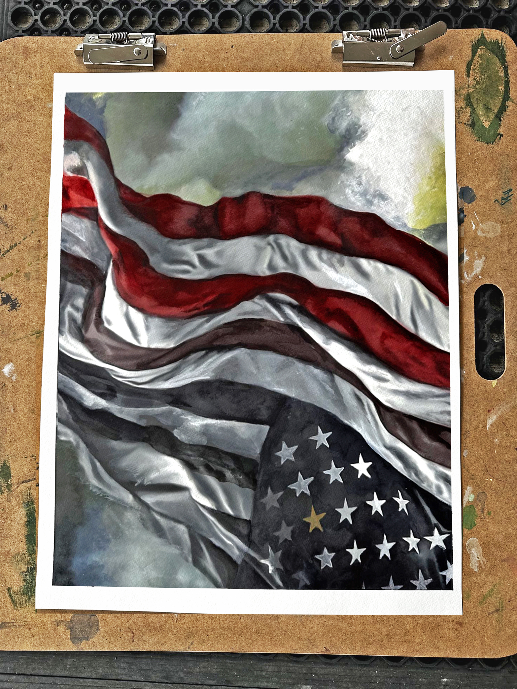

The First Painting of the American Heritage Project
The Flip
An American flag, one side bright, one side faded; a study of resilience and erasure, made to hang in any orientation.
The Painting
A flag that changes with the eye that holds it
The Flip captures the present dichotomy of viewpoints in our country, and it is profoundly personal. In its darker shadows are ash and charcoal Jordan gathered from an arson fire that burned the front of her gallery years ago on the Fourth of July. A bright American flag on one side and faded on the other, it speaks to both resilience and erasure. Its colors are foraged from earth in many states across the country.
Is the nation in descent, or in rebirth? At half-mast in mourning, tumbling through free fall, or flying at full force? The answers lie in the eyes of the viewer.
This painting can be viewed in any orientation. Turn it upside down, right side up, or to either side; each angle reframes the story. Inverted, the flag cries of distress. Upright, it ascends into the clouds. Tilt it, and the background shifts: smoke, fog, waves, or sky. Depending on the position, the stripes either bleed from red into black and white, thinning almost to disappearance, or move boldly from black and white into full, vibrant color. The back of the piece carries hanging hooks at both the top and the bottom, so it can be flipped and rehung in any orientation with ease.

Left: inverted, a signal of distress • Right: upright, a nation ascending
The American Heritage Project
The American Story
The Flip is the first of the American Heritage paintings, a growing body of work commemorating the 250th anniversary of America: the events that marked the nation, the people who carried it, the machines that served it, and the land it stands on.
Many of these paintings reach back through Jordan's own connections: her Cherokee-Osage great-grandmother, who wrote poetry and songs; her friend Fred Oldfield, who came here by wagon train and documented that experience in his paintings; her great-grandfather, who laid tracks on the railroad at age fifteen; and the mechanics in Ely, Nevada, who kept the railcars alive. They honor the war hero who freed her family from Theresienstadt; Theodora, who risked her life hiding Jews, Allied pilots, and Italian prisoners in 1940s Netherlands; and the Victory Vertical pianos they owned.
But the paintings are only part of the picture. Each is made from the matter it depicts, with pigments of rock, clay, metal, and other materials foraged from the places and people the work honors. Those materials transform the paintings into living archives, visually carrying each story.
Film • Jordan painting The Flip
News • The gallery fire
The Material
Living Ground
History rendered in its own matter.
The Flip was made after the fire, out of what it left behind. Jordan worked those remains by hand into the darkest passages of the flag. Beauty from ashes, in the most literal sense.
Jordan also used minerals gathered from many states across the country. Spectral hematite brings grays from Michigan. Malachite and azurite bring cooler tones from Arizona. Argillite brings reds from Idaho and Montana. Lapis lazuli lends blue from California. Bloodstone brings midtone gray from Nevada and Texas. Peach charcoal offers black from New York. Both grape charcoal from one-year-old vines and carbonized cherry pit charcoal come from Washington State. Charcoal from the gallery fire is juniper and fir.
Jordan's handprint, made at age five, marks the paint she makes by hand.
Film • Jordan describes her ideas for The Flip
Film • Jordan explains how she will create the smoke and ash effects
Acquire
The Anniversary Edition of 250
A numbered, closed edition of 250 hand-finished archival giclées, each painted so no two are alike. Each arrives framed and ready to hang, with a signed, numbered certificate and a video of Jordan painting that specific piece. The frame carries hangers on both ends, so The Flip can hang upright or inverted, just as the painting is meant to be shown. Museum-quality anti-reflective glass is available on request.

Each piece arrives framed with a hanger on each side, allowing it to be oriented in either direction.
$1,850
Ships framed • Shipping billed separately
Acquire The FlipAbout the Artist, Jordan A. Cook
Jordan A. Cook is a piano rebuilder, pianist, and watercolor artist whose work is rooted in the belief that beauty and meaning often emerge from what has been broken. She specializes in the restoration of WWII-era Steinway Victory Verticals, the compact pianos carried by B-17 bombers into active war zones to boost troop morale, and is regarded as the foremost expert on the instrument.
Jordan sees these rare instruments as living archives, each carrying a story that deserves to be told to preserve and perpetuate its legacy. One such restoration was Colonel George Boucher's Victory Vertical, a piano he had begun repairing but never finished. In a collaboration across time, Jordan completed his unfinished work, honoring both the man and the music he left behind.
Jordan's journey into restoration began during a period of profound hearing loss, when she encountered a fire and water damaged 1925 Steinway L needing to regain its voice. Pressing a soot-covered key, she felt the piano's silent story, and her calling. That piano, named Arukah (Hebrew for restored to a better, though different, condition), became the namesake of her business, Arukah Piano.
In addition to restoration work, Jordan composes music and is an internationally exhibited artist working in gouache, watercolor, and mixed media made from her own foraged pigments, paint, and ink. Her paintings have been shown in historical and contemporary galleries around the world, including the Children's Holocaust Museum at Terezin, the Matterhorn in Switzerland, and at Maidan Nezalezhnosti in Kyiv, Ukraine.
Whether restoring a war-torn piano or painting with pigments made from earth and ash, Jordan engages in a dialogue with time, creating works that bridge generations.
For Media
Journalists and press may download Jordan's biography and artist statement.
Follow Our Work
Be first to hear
New restorations, paintings, and updates. We send them a few times a year.